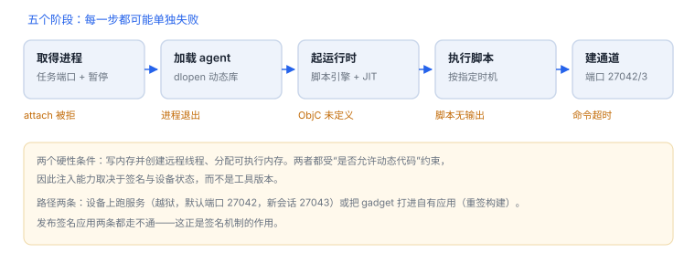

注入链：从进程启动到脚本执行
拿到进程、注入库、起运行时、建通道——四关都过，脚本才跑得起来
注入的失败很少是“脚本写错”，多数卡在更早的环节：没有进程控制权、库加载不进去、运行时起不来、通道没建好。按阶段排查比读日志快得多。
场景 命令行显示 connected，脚本里的日志却一行没有。多半不是脚本写错，而是它执行的时候，目标类还没被注册。
1. 五个阶段
| 阶段 | 成功标志 | 失败表现 |
|---|---|---|
| 取得进程 | 拿到任务端口，线程被暂停 | attach 被拒、权限不足 |
| 加载 agent | 目标进程中多出一个镜像 | 进程退出、镜像列表无变化 |
| 初始化运行时 | 脚本引擎可用，ObjC 可见 | 连上但 API 未定义 |
| 执行脚本 | 脚本按预期时机运行 | 无输出、时机过早 |
| 建立通道 | 双向消息与 RPC 可用 | 命令超时 |
2. 两条落地路径
| 路径 | 怎么落地 | 权限来源 | 限制 |
|---|---|---|---|
| 设备上跑 server | 越狱环境下的后台服务，默认端口 27042，新会话 27043 | 高权限运行 | 可附加任意进程，但依赖越狱 |
| 把 gadget 打进应用 | 重签名时增加一条动态库依赖，随包加载 | 应用自身签名 | 只影响该应用，需可调试/重签构建 |
两条路的共同前提是“允许加载额外代码”。发布签名应用两条都走不通，这正是签名机制的作用。

3. 底层做了什么
- 通过任务端口暂停目标线程，保存寄存器现场。
- 在目标进程分配内存，写入一小段引导代码（调用
dlopen的桩）。 - 创建远程线程执行它，返回后恢复原线程。
- 库入口启动脚本引擎，并分配一块可执行内存用于 JIT。
- 通过本机端口建立消息通道。
两个硬性条件
写内存并创建线程、分配可执行内存——这两件事在 iOS 上都受“是否允许动态代码”约束，因此注入能力本质取决于签名与设备状态，而不是工具版本。
写内存并创建线程、分配可执行内存——这两件事在 iOS 上都受“是否允许动态代码”约束，因此注入能力本质取决于签名与设备状态，而不是工具版本。
4. 命令形态
对自有构建做附加与启动注入
frida -U -n YourApp -l hook.js # 附加到已运行进程
frida -U -f com.example.yourapp -l hook.js --no-pause # 启动即注入
frida-ps -U | grep -i yourapp # 确认进程与标识-f 会在进程启动早期接管，适合抓初始化调用；-n/-p 附加更简单，但会错过启动阶段。
5. 时机选择
| 时机 | 能抓到 | 代价 |
|---|---|---|
| 启动即暂停（spawn） | 初始化、单例构造、早期网络请求 | 容易卡死启动，需要正确恢复 |
| 运行中附加（attach） | 交互后的业务逻辑 | 错过一次性初始化 |
| 脚本内延迟 | 界面出现后的调用 | 可能错过首屏数据加载 |
6. 失败分流
| 现象 | 最可能原因 | 查哪里 |
|---|---|---|
| attach 被拒绝 | 应用无调试/动态代码权限 | 签名能力、设备状态 |
| 连上立即断开 | agent 与系统/架构不匹配 | arm64 与 arm64e、系统版本 |
| 脚本无输出 | 执行早于类注册 | 改用 spawn 或延迟重试 |
| 端口不通 | 端口被改或未监听 | 实际监听端口与转发 |
| 注入后闪退 | 可执行内存不可用，或触发完整性校验 | 崩溃报告、页权限 |
延伸：09 静态侦察 · F01 脚本时机 · 06 ptrace 与附加
7. 数据细节：一次注入涉及多少东西
| 对象 | 量级 | 说明 |
|---|---|---|
| 远程线程 | 1 个 | 用于执行加载桩，返回后恢复原线程 |
| 可执行内存 | 至少 1 页（16 KB） | 引导桩与脚本引擎的 JIT 区 |
| 通信端口 | 1 个 | 默认 27042，新会话常用 27043 |
| agent 库 | 数 MB 量级 | 含脚本引擎，随版本变化 |
| 初始化耗时 | 数十至数百毫秒 | 取决于设备与库大小 |
这解释了为什么注入后应用会“卡一下”：暂停线程、映射库、启动引擎都在这一瞬间完成。
8. 一次真实排查记录：连上了但脚本无输出
- 现象：命令行显示已连接，脚本里
console.log没有任何输出。 - 先分阶段：连接成功只说明通道建立，不代表脚本已执行。
- 查时机：脚本在
ObjC初始化之前运行，桥接对象为空，回调根本没挂上。 - 改法：改为启动即暂停（spawn）或延迟重试，等类注册后再安装。
- 结论与限制：记录“执行早于类注册”，并注明该结论只对当前系统版本成立。
9. 自测
- 为什么“能 attach”与“能加载脚本”是两件事？
- 注入过程为什么必须暂停目标线程？
- gadget 与 server 两条路径在权限来源上有什么区别？
- 默认端口 27042 与 27043 分别用于什么？